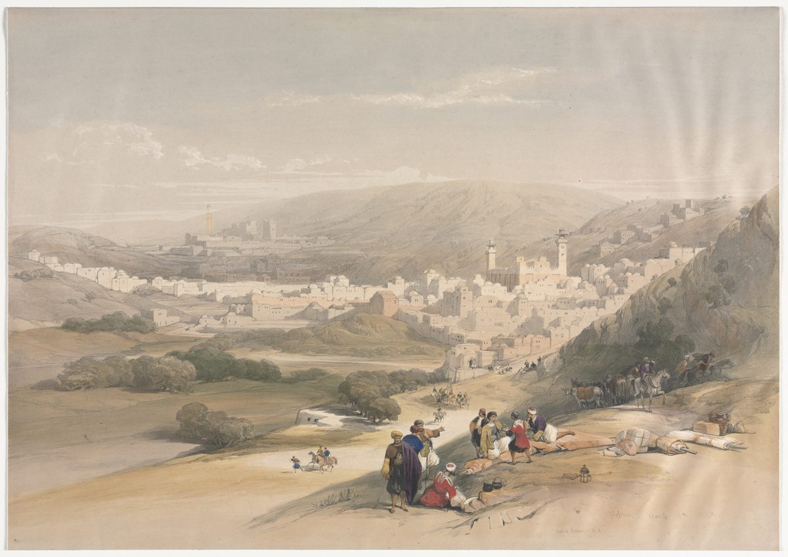

Joshua 20 — The Mister Translation

⚠ This is a traveller’s view of Hebron from the road, dated March 18th 1839 on the print, and it shows what no verse of the chapter says about the town. Joshua 20:7 gives it one clause, “Kiriath-arba — that is, Hebron — in the hill country of Judah,” and Joshua 14 and 15 had already given it to Caleb. The print draws a town of the hill country reached by a road, with travellers resting at the roadside in the foreground. The Hebrew says only that the fugitive stands “at the entrance of the gate of the city” and speaks to the elders (v4); it does not describe the approach.

★★★ V1 says “Jehovah spoke to Joshua” as no other verse does, and it is the last time the book has Jehovah speak to him. The sentence vayomer YHWH el Yehoshua, ‘and Jehovah said to Joshua,’ stands in eleven verses of the Hebrew Bible, every one of them in chapters 1–11 of this book. V1 changes the verb: vayedabber YHWH el Yehoshua, ‘and Jehovah spoke to Joshua,’ stands in one verse of the Hebrew Bible. It is Numbers 35:9–10 (already on these pages) with the name changed: “And Jehovah spoke to Moses, saying: Speak to the children of Israel and say to them” is here the same two verbs said to Joshua, without “and say to them.” The last verse before this one in which Jehovah is said to speak to him is 13:1, “Jehovah said to him: You have grown old.” After v1 there is none: chapter 21 opens with the heads of the Levites speaking (21:1–2), and the only “Thus says Jehovah” left in the book is Joshua’s own, said to the people (24:2, not yet on these pages). The last thing the book records Jehovah saying to Joshua is about the man who kills without meaning to.
★★ Four texts, four verbs for setting up the cities. Numbers 35 has the cities “befall” Israel (hikrah, v11) and then speaks of “giving” them (natan, vv6, 13, 14). Deuteronomy “sets apart” three (hivdil, 4:41; 19:2 and 7, already on these pages). Joshua 20 gives (natan: “Give for yourselves,” v2; “they gave,” v8) and, at v7, uses a fourth, which neither earlier text does. Of that verb, qadash, see the note on v7.
★★★ V3 puts together two phrases that the earlier laws keep apart. Numbers 35 describes the man the cities are for as one who strikes bishgagah, ‘by error’ (35:11 and 15); Deuteronomy as one who strikes bivli da’at, ‘without knowing’ (4:42 and 19:4, already on these pages). The word bishgagah stands in thirteen verses of the Hebrew Bible, eleven of them in Leviticus and Numbers, most of them about the sin-offering for a sin of error (Leviticus 4:2 and Numbers 15:27), and the other two in this chapter, vv3 and 9. The phrase bivli da’at, ‘without knowing,’ stands in six verses of the Hebrew Bible: Deuteronomy 4:42, Deuteronomy 19:4, vv3 and 5 here, and Job 35:16 and 36:12 (not yet on these pages). Only v3 appears in both lists. The shelf shows what a translator does with two near-synonyms side by side. The ASV reads ‘unwittingly and unawares’ and the KJV ‘unawares and unwittingly’, the same two words in the opposite order. The NIV reads ‘accidentally and unintentionally’, the Geneva ‘by ignorance, and unwittingly’, and the NWT 1984 ‘unintentionally without knowing it’, where its revision, the NWT 2013, has ‘unintentionally or accidentally’. The Douay-Rheims says it once, ‘unawares’, and so does the TLB, ‘unintentionally’.
★★ The man the city protects is called by the word for a murderer. The noun in vv3 and 5 is rotzeach. Numbers 35:11 uses it of the man who flees “by error”, and 35:16 of the man who “shall surely be put to death”; Deuteronomy 4:42 uses the verb for the unintended act itself, “one who kills his neighbour without knowing.” The Hebrew of this chapter has one noun for him, and the adverbs do the sorting. This translation prints ‘manslayer’, as Deuteronomy 4:42 and 19:3 do; Numbers 35 prints ‘killer’. See ratzach.
★★★ The elders at the gate gather him in; in Deuteronomy the elders of his own city send for him. V4 has the fugitive stand at the entrance of the gate and speak “in the ears of the elders of that city,” who then take him in and give him a place. Deuteronomy 19:12 (already on these pages) has the other set, for the man who killed in hatred and fled to a city of refuge: “the elders of his city shall send and take him from there, and give him into the hand of the redeemer of blood.” The gate is the ordinary court of a town in Deuteronomy: the parents bring a rebellious son to “the elders of his city, and to the gate of his place” (21:19), the girl’s parents bring the evidence “to the elders of the city, to the gate” (22:15), and the widow “shall go up to the gate, to the elders” (25:7, all already on these pages). The verse does not say what the elders weigh. The fugitive only “speaks his words,” and the verb that follows, asaf, ‘gather,’ is the verb of Deuteronomy 22:2: a lost animal whose owner is not near, “you shall gather it into your house, and it shall be with you” until he comes seeking it.
★★ “They shall not deliver up” is the verb Deuteronomy 23:16 uses of the runaway slave. The verb is hisgir, to shut someone up in another’s hand: lo tasgir, “you shall not hand over” a slave who has escaped to you (Deuteronomy 23:16, already on these pages), and here lo yasgiru. The two refuges are one act: the man who takes in the slave and the city that takes in the manslayer both refuse to give the fugitive up. The note on Deuteronomy 23:16 sets the verb beside Amos 1:6 and 1:9, where it names nations handing whole populations to Edom.
★★ “From yesterday and the day before” is a legal test five times and a plain adverb once. The idiom mitmol shilshom stands in six verses of the Hebrew Bible, spelled two ways: Exodus 21:29, Deuteronomy 4:42 and 19:4 write it without the vowel letters, and Deuteronomy 19:6, Joshua 3:4 and v5 here write it with them. Five are tests of what was already so before the act: the ox that has a habit of goring (Exodus 21:29) and the man who did not hate (Deuteronomy 4:42, 19:4 and 19:6, and v5). Joshua 3:4 alone uses it as a plain ‘before’ (all already on these pages), where this translation prints ‘before’ and the note there says why. In v5 it carries the whole defence: he struck “without knowing,” and nothing in his past says otherwise.
⚠ Two witnesses add a proof the Hebrew does not ask for. V4 gives the fugitive only the verb vedibber, ‘and speak.’ The ASV and the KJV read ‘declare his cause’, the Geneva ‘show his cause’ and the NIV ‘state their case’. The Douay-Rheims, following the Latin, has him speak ‘such things as prove him innocent’, and the TLB has him ‘explain what happened’ and, at v6, be ‘found innocent’ by the judges. At v5 the ASV and KJV keep the idiom as ‘beforetime’; the NIV turns it into a legal term, ‘without malice aforethought’, and the Douay-Rheims into a measure, ‘is not proved to have been his enemy two or three days before’. The TLB drops the clause and gives the reason in one word, ‘the death was accidental’.
★★★ The stay has two ends, and no verse of Numbers 35 has both. Numbers 35 gives the first in v12, where the manslayer cannot die “until he stands before the congregation for judgement,” and the second in vv25 and 28, where he stays “until the death of the high priest” (already on these pages). The clause ad omdo lifnei ha-edah la-mishpat, ‘until he stands before the congregation for judgement,’ stands in two verses of the Hebrew Bible, Numbers 35:12 and this one; v9 has it shortened, without “for judgement.” The clause ad mot ha-kohen ha-gadol, ‘until the death of the high priest,’ stands in three verses of the Hebrew Bible: Numbers 35:25 and 28, which write the title without the vowel letter, and v6, which writes it with. V6 is the one verse that has both clauses, and it joins them with no word between: until he stands … until the death. The shelf supplies a joint, and it is not always the same one. The Geneva reads ‘in judgment, or until the death of the high Priest’, two alternatives, where the KJV reads ‘and until the death’, the NIV ‘and until the death’ and the Douay-Rheims ‘and till the death’, two conditions in a row. The ASV and the NWT 1984 keep the bare comma, ‘until the death of the high priest’. This translation keeps it too.
★★★ “Who is in those days” names an office, not a man, and this is its fourth verse. The formula asher yihyeh bayamim hahem, ‘who is in those days,’ stands in four verses of the Hebrew Bible, and three are in Deuteronomy, each pointing at whoever holds an office when the case arises: the judge (17:9), the priests and judges (19:17) and the priest of the first-fruits (26:3, all already on these pages). The fourth gives the same treatment to the high priest, and drops the clause Numbers 35:25 attaches to him, “who was anointed with the holy oil.” The title ha-kohen ha-gadol stands in one verse of the book of Joshua, this one. Eleazar is called “the priest” (14:1, 17:4, 19:51 and 21:1) and never “the high priest”, and the book’s closing verse records that “Eleazar the son of Aaron died” (24:33, not yet on these pages). The text does not say who the high priest of v6 is, or whether the title is his. See kohen gadol.
★★ Nothing in v6 says why a death sets him free. The nearest sentences are in Numbers 35: v32 forbids taking a ransom for the man who has fled, “that he should return to dwell in the land before the death of the priest,” and v33 says that “for the land no atonement can be made for the blood that is shed in it, except by the blood of the one who shed it” (already on these pages). Joshua 20 gives the term and no reason. In the verses of Numbers 35 cited here, the release comes after the death and the connection between them is left to the reader.
⚠ The office becomes a term of service in three witnesses. The Hebrew has “in those days.” The NWT 1984 reads ‘who happens to be in those days’, the NWT 2013 ‘who is in office at that time’ and the NIV ‘who is serving at that time’. The TLB does not translate the clause, and gives the other limit a verdict the Hebrew does not mention: the man stays until ‘he has been tried by the judges and found innocent’.
★★★ “They sanctified Kedesh” says the same three letters twice. The verb is vayaqdishu, from the root q-d-sh, and its first object is Qedesh, a town whose name is built on the same root. The three root letters of the verb are the three letters of the town’s name. The shelf loses it. The ASV and the NIV read ‘set apart’, the KJV, the Geneva and the Douay-Rheims ‘appointed’, and the TLB ‘chosen’. Only the NWT 1984 keeps the holiness, ‘gave a sacred status to Keʹdesh’, and so does its revision, the NWT 2013. No earlier text on the cities uses this verb, since Numbers 35 gives and Deuteronomy sets apart (see the note on v1). Kedesh in Galilee is not Kadesh-barnea. See qadash.
★★ The west is listed north to south, the east south to north, and the number six is never said. Kedesh, Shechem and Hebron stand in that order down the length of the land, one in each of three hill countries (Naphtali’s, Ephraim’s, Judah’s); Deuteronomy 19:3 (already on these pages) asked that the territory of the land be divided in three for the cities. The east then runs back up: Bezer on the southern tableland, Ramoth in Gilead, Golan in Bashan. V8 repeats the order of Deuteronomy 4:43 name for name, and no tribe gets two cities. The text states none of this as a plan, and no verse of the chapter says ‘six’: vv7–8 name three and three. The number is Numbers 35’s (vv6 and 13).
★★ Hebron is Caleb’s town, and the clause that names it stands in one other verse. The clause Qiryat Arba hi Chevron, ‘Kiriath-arba — that is, Hebron,’ stands in two verses of the Hebrew Bible: Joshua 15:54, in Judah’s list, and v7. Hebron was granted to Caleb (14:13 and 15:13, already on these pages); v7 sets it in the hill country of Judah and says nothing of Caleb. Joshua 21:11–13 (not yet on these pages) gives the city to the sons of Aaron, gives “the fields of the city and its villages” to Caleb, and calls it “the city of refuge for the manslayer.”
★★ Shechem, where Simeon and Levi killed on purpose, is made a refuge for the man who killed by error. Genesis 34:25–26 (already on these pages) has Simeon and Levi come on the city “unopposed” and kill “every male,” Hamor and Shechem by the edge of the sword, and Genesis 49:5–7 has Jacob call their swords “weapons of violence” and say, “in their anger they killed a man.” Joshua 19:9 (already on these pages) is where the root of Jacob’s sentence “I will divide them in Jacob” returns, in the noun for Judah’s “portion” that Simeon’s lot is taken out of. Verse 7 sanctifies the same city and says nothing of the earlier killing. The connection is the reader’s.
★★ V8 is the first verse in Joshua to say “out of the tribe of.” The east is listed with mi-mateh three times, “out of the tribe of Reuben … of Gad … of Manasseh,” where Deuteronomy 4:43 wrote “for the Reubenites … the Gadites … the Manassites.” Joshua 21 (not yet on these pages) uses the same phrase again and again through its lists of the Levites’ cities (21:9, 17, 23, 28, 30, 32 and others).
★★★ The word for “appointed” stands in no other verse, and it shares a root with the tent of meeting. The form ha-mu’adah, ‘the appointed,’ stands in one verse of the Hebrew Bible. It is a passive participle of the root that gives mo’ed, ‘appointed time,’ and ohel mo’ed, ‘tent of meeting’ — the tent at whose door Joshua 19:51 (already on these pages) has the land finished being divided. The same verse ends on ha-edah, ‘the congregation,’ which the dictionary derives from the same root. So v9 holds two words of one root, ‘appointed’ and ‘congregation’, and the chapter before it ended at the meeting-tent. This translation prints ‘appointed.’ The ASV reads ‘the appointed cities’; the KJV, the Geneva and the NWT 1984 read ‘the cities appointed’; the NIV reads ‘designated cities’, and the TLB turns the participle into a name, ‘These Cities of Refuge’.
★★★ The resident alien gets the refuge in the words Numbers 15 uses to give him the sin-offering. The phrase ve-lager hagar betokham, ‘and for the resident alien who resides among them,’ stands in four verses of the Hebrew Bible: Numbers 15:26 and 29, Numbers 19:10 and this verse (all already on these pages). Three of the four also carry bishgagah, ‘by error’: Numbers 15:26, Numbers 15:29 and v9. Numbers 15 makes one law for the native and the alien who acts by error; v9 makes one refuge. Numbers 35:15 names two kinds of outsider, “the stranger and the settler” (ha-ger ve-ha-toshav); v9 names the first only. The text does not say why.
★★ The chapter ends on the congregation; the verdict and the penalty for leaving stay in Numbers. The last words of v9 are lifnei ha-edah, ‘before the congregation.’ Nothing in Joshua 20 says what that body decides, where it sits, or what follows if the manslayer leaves his city. Numbers 35 says all three: the congregation “shall judge between the one who struck and the redeemer of blood” (v24), “shall rescue the killer from the hand of the redeemer of blood” and “shall return him to his city of refuge” (v25); and if he goes out beyond the border and the redeemer finds him and kills him, “there is no blood for him” (vv26–27, all already on these pages). Joshua 20 gives the gate, the stay and the release, and leaves the court and the penalty where Numbers put them.
⚠ Three witnesses give the standing a purpose. The Hebrew ends on omdo, ‘his standing,’ before ha-edah, and says nothing of what happens there. The Douay-Rheims, following the Latin, reads ‘until he should stand before the people to lay open his cause’, and the NWT 2013 and the NIV both read ‘prior to standing trial before the assembly’. The NWT 1984 keeps the bare standing, ‘until his standing before the assembly’.
Echoes paid. Joshua 19’s promise that Joshua 20 would set apart Kedesh in Galilee, a city of Naphtali’s lot, first among six cities of refuge (19:37), is kept at v7. The three cities Moses set apart east of the Jordan (Deuteronomy 4:41–43) are named again at v8, in the same order. The three more that Deuteronomy 19:8–9 allows “if Jehovah your God enlarges your territory” are not added. Numbers 35:9–15 and its stay, congregation and high priest (vv12, 24–28) are answered at vv1–6 and 9, and Deuteronomy 19’s “without knowing” and “from yesterday and the day before” at vv3 and 5. The note on Deuteronomy 23:16 counted Joshua 20:5 among the uses of hisgir, and v5 is that use. The note on Joshua 3:4 said that v5 keeps the idiom whole, and it does. The tent of meeting where Joshua 19:51 ended returns in v9 as the root of ‘appointed.’
Echoes planted. Joshua 21 (not yet on these pages) gives the Levites their cities and calls five of the six cities of this chapter “the city of refuge for the manslayer”: Hebron (with Caleb’s fields, 21:11–13), Shechem, Golan, Kedesh and Ramoth in Gilead. The Hebrew of that chapter does not name Bezer. 1 Chronicles 6 (not yet on these pages) uses “the cities of refuge” twice, of Hebron and of Shechem. Joshua 24 (not yet on these pages) gathers Israel at Shechem, buries Joseph’s bones there (24:32) and ends on Eleazar’s death (24:33). Hosea 6:9 (not yet on these pages) uses the verb of v3’s noun for priests who murder on a road, in a clause that ends on Shechemah, and 2 Samuel 14:11 (not yet on these pages) is the one story in which the redeemer of blood appears.
Decisions. Hebrew and English verse numbers align through the whole chapter, with no versification shift. Rotzeach is ‘manslayer’, as at Deuteronomy 4:42 and 19:3, where Numbers 35 prints ‘killer’; go’el ha-dam is ‘redeemer of blood’, as in Numbers 35 and Deuteronomy 19. Bishgagah is ‘by error’ (Numbers 35:11, 15) and bivli da’at ‘without knowing’ (Deuteronomy 4:42, 19:4); mitmol shilshom is ‘from yesterday and the day before’, as in Deuteronomy 4:42 and 19:4, 6, and not the plain ‘before’ of Joshua 3:4. Miqlat is ‘refuge’, natan ‘give’, and the hiphil of qadash at v7 is ‘sanctified.’ Asaf is ‘gather’, as at Deuteronomy 22:2. Hisgir is ‘deliver up’: Deuteronomy 23:16 prints ‘hand over’ for the same verb, which here would say ‘hand’ twice in one clause (‘hand over … into his hand’). Ha-edah is ‘congregation’ and mishpat ‘judgement’, as in Numbers 35:12; ha-kohen ha-gadol is ‘the high priest’, and asher yihyeh bayamim hahem is ‘who is in those days’, as at Deuteronomy 17:9 and 26:3. Ha-ger ha-gar is ‘the resident alien who resides’, as ha-ger is at Joshua 8:33 and 35. Ha-mu’adah is ‘the appointed.’ Yerichoh mizrachah is ‘at Jericho, eastward’, as at 13:32; bamishor is ‘on the tableland’, as at Deuteronomy 4:43. Mi-mateh is ‘out of the tribe of.’ Written and read forms differ in the Hebrew column at v8, where the written glvn (the letters of Golan with the lamed and vav in the other order) stands beside the read Golan (see ketiv / qere); the translation follows the reading. The Masoretic text marks one open section, after v9.
Library. One new dictionary entry in both languages: kohen gadol (the high priest, and the five verses before 2 Kings 22:4 that use the title without a name). Six existing dictionary entries extended in both languages: miqlat (Joshua 20 now on these pages, and its two verses), goel (the three verses of this chapter), ratzach (the noun in vv3 and 5), shegagah (both phrases in v3), qadash (the hiphil of v7) and mo’ed (the participle in v9). Six existing encyclopedia entries extended in both languages: Kedesh, Shechem, Hebron, Bezer, Ramoth in Gilead and Golan each gain a line on this chapter. No new encyclopedia entries: all six cities already had one. Hebron’s entry also corrects “the one” inheritance not given by lot: Caleb’s grant is the first, and Joshua’s own city (19:49–50) the second.
⚠ A note on order: Joshua stands on these pages at chapters 1–20. Joshua 21–24 remain the open sequence; next in this book is Joshua 21, where the heads of the Levites come to Shiloh to ask for the cities that Jehovah commanded by the hand of Moses.